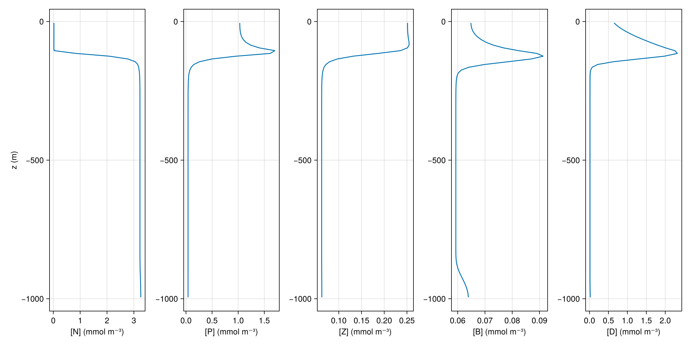
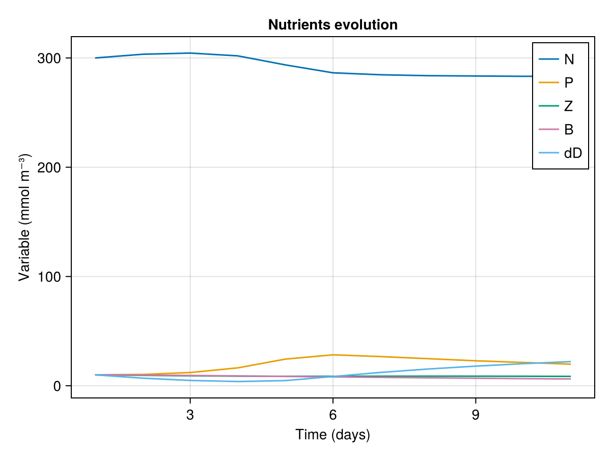

Nutrients, plankton, bacteria, detritus
This example illustrates how to use ClimaOceanBiogeochemistry's NutrientsPlanktonBacteriaDetrius model in a single column context.
using ClimaOceanBiogeochemistry: NutrientsPlanktonBacteriaDetritus
using Oceananigans
using Oceananigans.Units
using Printf
using CairoMakieA single column grid
We set up a single column grid whose depth is H and with Nz points
H = 1000meters
z = (-H, 0)
Nz = 100
grid = RectilinearGrid(size = Nz; z, topology = (Flat, Flat, Bounded))1×1×100 RectilinearGrid{Float64, Oceananigans.Grids.Flat, Oceananigans.Grids.Flat, Oceananigans.Grids.Bounded} on Oceananigans.Architectures.CPU with 0×0×3 halo
├── Flat x
├── Flat y
└── Bounded z ∈ [-1000.0, 0.0] regularly spaced with Δz=10.0A prescribed vertical tracer diffusivity
We define a tracer diffusivity that mixes a lot near the surface (in the top 50 m), and less down below.
@inline κ(z, t) = 1e-4 + 1e-2 * exp(z / 25) + 1e-2 * exp(-(z + 1000) / 50)
vertical_diffusion = VerticalScalarDiffusivity(; κ)VerticalScalarDiffusivity{ExplicitTimeDiscretization}(ν=0.0, κ=κ (generic function with 1 method))We put the pieces together. The important line here is biogeochemistry = NutrientsPlanktonBacteriaDetritus(grid). We use all default parameters.
model = HydrostaticFreeSurfaceModel(; grid,
velocities = PrescribedVelocityFields(),
biogeochemistry = NutrientsPlanktonBacteriaDetritus(grid),
tracers = (:N, :P, :Z, :B, :D),
tracer_advection = WENO(),
buoyancy = nothing,
closure = vertical_diffusion)HydrostaticFreeSurfaceModel{CPU, RectilinearGrid}(time = 0 seconds, iteration = 0)
├── grid: 1×1×100 RectilinearGrid{Float64, Oceananigans.Grids.Flat, Oceananigans.Grids.Flat, Oceananigans.Grids.Bounded} on Oceananigans.Architectures.CPU with 0×0×3 halo
├── timestepper: QuasiAdamsBashforth2TimeStepper
├── tracers: (N, P, Z, B, D)
├── closure: VerticalScalarDiffusivity{ExplicitTimeDiscretization}(ν=0.0, κ=(N=κ (generic function with 1 method), P=κ (generic function with 1 method), Z=κ (generic function with 1 method), B=κ (generic function with 1 method), D=κ (generic function with 1 method)))
├── buoyancy: Nothing
├── advection scheme:
│ ├── momentum: Centered reconstruction order 2
│ ├── N: WENO reconstruction order 5
│ ├── P: WENO reconstruction order 5
│ ├── Z: WENO reconstruction order 5
│ ├── B: WENO reconstruction order 5
│ └── D: WENO reconstruction order 5
└── coriolis: NothingInitial conditions
We initialize the model with reasonable nutrients, detritus, and a nutrient mixed layer.
set!(model, N=3, P=1e-1, Z=1e-1, B=1e-1, D=1e-1)
simulation = Simulation(model, Δt=30minutes, stop_time=10days)
function progress(sim)
@printf("Iteration: %d, time: %s, total(N): %.2e \n",
iteration(sim), prettytime(sim),
sum(model.tracers.N) + sum(model.tracers.P) + sum(model.tracers.B) + sum(model.tracers.D))
return nothing
end
simulation.callbacks[:progress] = Callback(progress, IterationInterval(10))Callback of progress on IterationInterval(10)Let's see the initial condition
N = model.tracers.N
P = model.tracers.P
Z = model.tracers.Z
B = model.tracers.B
D = model.tracers.D
z = znodes(N)
fig = Figure(size=(1200, 600))
axN = Axis(fig[1, 1], xlabel="Nutrient concentration (N)", ylabel="z (m)")
axP = Axis(fig[1, 2], xlabel="Phytoplankton concentration (P)")
axZ = Axis(fig[1, 3], xlabel="Zooplankton concentration (Z)")
axB = Axis(fig[1, 4], xlabel="Bacteria concentration (B)")
axD = Axis(fig[1, 5], xlabel="Detritus concentration (D)")
lines!(axN, interior(N, 1, 1, :), z)
lines!(axP, interior(P, 1, 1, :), z)
lines!(axZ, interior(Z, 1, 1, :), z)
lines!(axB, interior(B, 1, 1, :), z)
lines!(axD, interior(D, 1, 1, :), z)
current_figure()Now we add an output writer to the simulation and run the simulation.
filename = "nutrients_plankton_bacteria_detritus.jld2"
simulation.output_writers[:fields] = JLD2OutputWriter(model, model.tracers;
filename,
schedule = TimeInterval(1day),
overwrite_existing = true)
run!(simulation)┌ Warning: some parameters could not be resolved for type Oceananigans.TurbulenceClosures.ScalarDiffusivity{Oceananigans.TurbulenceClosures.ExplicitTimeDiscretization,Oceananigans.TurbulenceClosures.VerticalFormulation,Float64,NamedTuple{(:N, :P, :Z, :B, :D),Tuple{Main.#κ,Main.#κ,Main.#κ,Main.#κ,Main.#κ}},Float64}; reconstructing
└ @ JLD2 ~/.julia/packages/JLD2/OP0XX/src/data/reconstructing_datatypes.jl:618
┌ Warning: some parameters could not be resolved for type Oceananigans.TurbulenceClosures.ScalarDiffusivity{Oceananigans.TurbulenceClosures.ExplicitTimeDiscretization,Oceananigans.TurbulenceClosures.VerticalFormulation,Float64,NamedTuple{(:N, :P, :Z, :B, :D),Tuple{Main.#κ,Main.#κ,Main.#κ,Main.#κ,Main.#κ}},Float64}; reconstructing
└ @ JLD2 ~/.julia/packages/JLD2/OP0XX/src/data/reconstructing_datatypes.jl:618
┌ Warning: some parameters could not be resolved for type Oceananigans.TurbulenceClosures.ScalarDiffusivity{Oceananigans.TurbulenceClosures.ExplicitTimeDiscretization,Oceananigans.TurbulenceClosures.VerticalFormulation,Float64,NamedTuple{(:N, :P, :Z, :B, :D),Tuple{Main.#κ,Main.#κ,Main.#κ,Main.#κ,Main.#κ}},Float64}; reconstructing
└ @ JLD2 ~/.julia/packages/JLD2/OP0XX/src/data/reconstructing_datatypes.jl:618
┌ Warning: some parameters could not be resolved for type Oceananigans.TurbulenceClosures.ScalarDiffusivity{Oceananigans.TurbulenceClosures.ExplicitTimeDiscretization,Oceananigans.TurbulenceClosures.VerticalFormulation,Float64,NamedTuple{(:N, :P, :Z, :B, :D),Tuple{Main.#κ,Main.#κ,Main.#κ,Main.#κ,Main.#κ}},Float64}; reconstructing
└ @ JLD2 ~/.julia/packages/JLD2/OP0XX/src/data/reconstructing_datatypes.jl:618
┌ Warning: some parameters could not be resolved for type Oceananigans.TurbulenceClosures.ScalarDiffusivity{Oceananigans.TurbulenceClosures.ExplicitTimeDiscretization,Oceananigans.TurbulenceClosures.VerticalFormulation,Float64,NamedTuple{(:N, :P, :Z, :B, :D),Tuple{Main.#κ,Main.#κ,Main.#κ,Main.#κ,Main.#κ}},Float64}; reconstructing
└ @ JLD2 ~/.julia/packages/JLD2/OP0XX/src/data/reconstructing_datatypes.jl:618
[ Info: Initializing simulation...
Iteration: 0, time: 0 seconds, total(N): 3.30e+02
┌ Warning: some parameters could not be resolved for type Oceananigans.TurbulenceClosures.ScalarDiffusivity{Oceananigans.TurbulenceClosures.ExplicitTimeDiscretization,Oceananigans.TurbulenceClosures.VerticalFormulation,Float64,NamedTuple{(:N, :P, :Z, :B, :D),Tuple{Main.#κ,Main.#κ,Main.#κ,Main.#κ,Main.#κ}},Float64}; reconstructing
└ @ JLD2 ~/.julia/packages/JLD2/OP0XX/src/data/reconstructing_datatypes.jl:618
[ Info: ... simulation initialization complete (1.401 seconds)
[ Info: Executing initial time step...
[ Info: ... initial time step complete (2.425 seconds).
Iteration: 10, time: 5 hours, total(N): 3.30e+02
Iteration: 20, time: 10 hours, total(N): 3.30e+02
Iteration: 30, time: 15 hours, total(N): 3.30e+02
Iteration: 40, time: 20 hours, total(N): 3.30e+02
┌ Warning: some parameters could not be resolved for type Oceananigans.TurbulenceClosures.ScalarDiffusivity{Oceananigans.TurbulenceClosures.ExplicitTimeDiscretization,Oceananigans.TurbulenceClosures.VerticalFormulation,Float64,NamedTuple{(:N, :P, :Z, :B, :D),Tuple{Main.#κ,Main.#κ,Main.#κ,Main.#κ,Main.#κ}},Float64}; reconstructing
└ @ JLD2 ~/.julia/packages/JLD2/OP0XX/src/data/reconstructing_datatypes.jl:618
Iteration: 50, time: 1.042 days, total(N): 3.31e+02
Iteration: 60, time: 1.250 days, total(N): 3.31e+02
Iteration: 70, time: 1.458 days, total(N): 3.31e+02
Iteration: 80, time: 1.667 days, total(N): 3.31e+02
Iteration: 90, time: 1.875 days, total(N): 3.31e+02
┌ Warning: some parameters could not be resolved for type Oceananigans.TurbulenceClosures.ScalarDiffusivity{Oceananigans.TurbulenceClosures.ExplicitTimeDiscretization,Oceananigans.TurbulenceClosures.VerticalFormulation,Float64,NamedTuple{(:N, :P, :Z, :B, :D),Tuple{Main.#κ,Main.#κ,Main.#κ,Main.#κ,Main.#κ}},Float64}; reconstructing
└ @ JLD2 ~/.julia/packages/JLD2/OP0XX/src/data/reconstructing_datatypes.jl:618
Iteration: 100, time: 2.083 days, total(N): 3.31e+02
Iteration: 110, time: 2.292 days, total(N): 3.31e+02
Iteration: 120, time: 2.500 days, total(N): 3.31e+02
Iteration: 130, time: 2.708 days, total(N): 3.31e+02
Iteration: 140, time: 2.917 days, total(N): 3.31e+02
┌ Warning: some parameters could not be resolved for type Oceananigans.TurbulenceClosures.ScalarDiffusivity{Oceananigans.TurbulenceClosures.ExplicitTimeDiscretization,Oceananigans.TurbulenceClosures.VerticalFormulation,Float64,NamedTuple{(:N, :P, :Z, :B, :D),Tuple{Main.#κ,Main.#κ,Main.#κ,Main.#κ,Main.#κ}},Float64}; reconstructing
└ @ JLD2 ~/.julia/packages/JLD2/OP0XX/src/data/reconstructing_datatypes.jl:618
Iteration: 150, time: 3.125 days, total(N): 3.31e+02
Iteration: 160, time: 3.333 days, total(N): 3.31e+02
Iteration: 170, time: 3.542 days, total(N): 3.31e+02
Iteration: 180, time: 3.750 days, total(N): 3.31e+02
Iteration: 190, time: 3.958 days, total(N): 3.31e+02
┌ Warning: some parameters could not be resolved for type Oceananigans.TurbulenceClosures.ScalarDiffusivity{Oceananigans.TurbulenceClosures.ExplicitTimeDiscretization,Oceananigans.TurbulenceClosures.VerticalFormulation,Float64,NamedTuple{(:N, :P, :Z, :B, :D),Tuple{Main.#κ,Main.#κ,Main.#κ,Main.#κ,Main.#κ}},Float64}; reconstructing
└ @ JLD2 ~/.julia/packages/JLD2/OP0XX/src/data/reconstructing_datatypes.jl:618
Iteration: 200, time: 4.167 days, total(N): 3.31e+02
Iteration: 210, time: 4.375 days, total(N): 3.31e+02
Iteration: 220, time: 4.583 days, total(N): 3.31e+02
Iteration: 230, time: 4.792 days, total(N): 3.31e+02
Iteration: 240, time: 5 days, total(N): 3.31e+02
┌ Warning: some parameters could not be resolved for type Oceananigans.TurbulenceClosures.ScalarDiffusivity{Oceananigans.TurbulenceClosures.ExplicitTimeDiscretization,Oceananigans.TurbulenceClosures.VerticalFormulation,Float64,NamedTuple{(:N, :P, :Z, :B, :D),Tuple{Main.#κ,Main.#κ,Main.#κ,Main.#κ,Main.#κ}},Float64}; reconstructing
└ @ JLD2 ~/.julia/packages/JLD2/OP0XX/src/data/reconstructing_datatypes.jl:618
Iteration: 250, time: 5.208 days, total(N): 3.31e+02
Iteration: 260, time: 5.417 days, total(N): 3.31e+02
Iteration: 270, time: 5.625 days, total(N): 3.31e+02
Iteration: 280, time: 5.833 days, total(N): 3.31e+02
┌ Warning: some parameters could not be resolved for type Oceananigans.TurbulenceClosures.ScalarDiffusivity{Oceananigans.TurbulenceClosures.ExplicitTimeDiscretization,Oceananigans.TurbulenceClosures.VerticalFormulation,Float64,NamedTuple{(:N, :P, :Z, :B, :D),Tuple{Main.#κ,Main.#κ,Main.#κ,Main.#κ,Main.#κ}},Float64}; reconstructing
└ @ JLD2 ~/.julia/packages/JLD2/OP0XX/src/data/reconstructing_datatypes.jl:618
Iteration: 290, time: 6.042 days, total(N): 3.31e+02
Iteration: 300, time: 6.250 days, total(N): 3.31e+02
Iteration: 310, time: 6.458 days, total(N): 3.31e+02
Iteration: 320, time: 6.667 days, total(N): 3.31e+02
Iteration: 330, time: 6.875 days, total(N): 3.31e+02
┌ Warning: some parameters could not be resolved for type Oceananigans.TurbulenceClosures.ScalarDiffusivity{Oceananigans.TurbulenceClosures.ExplicitTimeDiscretization,Oceananigans.TurbulenceClosures.VerticalFormulation,Float64,NamedTuple{(:N, :P, :Z, :B, :D),Tuple{Main.#κ,Main.#κ,Main.#κ,Main.#κ,Main.#κ}},Float64}; reconstructing
└ @ JLD2 ~/.julia/packages/JLD2/OP0XX/src/data/reconstructing_datatypes.jl:618
Iteration: 340, time: 7.083 days, total(N): 3.31e+02
Iteration: 350, time: 7.292 days, total(N): 3.31e+02
Iteration: 360, time: 7.500 days, total(N): 3.31e+02
Iteration: 370, time: 7.708 days, total(N): 3.31e+02
Iteration: 380, time: 7.917 days, total(N): 3.31e+02
┌ Warning: some parameters could not be resolved for type Oceananigans.TurbulenceClosures.ScalarDiffusivity{Oceananigans.TurbulenceClosures.ExplicitTimeDiscretization,Oceananigans.TurbulenceClosures.VerticalFormulation,Float64,NamedTuple{(:N, :P, :Z, :B, :D),Tuple{Main.#κ,Main.#κ,Main.#κ,Main.#κ,Main.#κ}},Float64}; reconstructing
└ @ JLD2 ~/.julia/packages/JLD2/OP0XX/src/data/reconstructing_datatypes.jl:618
Iteration: 390, time: 8.125 days, total(N): 3.31e+02
Iteration: 400, time: 8.333 days, total(N): 3.31e+02
Iteration: 410, time: 8.542 days, total(N): 3.31e+02
Iteration: 420, time: 8.750 days, total(N): 3.31e+02
Iteration: 430, time: 8.958 days, total(N): 3.31e+02
┌ Warning: some parameters could not be resolved for type Oceananigans.TurbulenceClosures.ScalarDiffusivity{Oceananigans.TurbulenceClosures.ExplicitTimeDiscretization,Oceananigans.TurbulenceClosures.VerticalFormulation,Float64,NamedTuple{(:N, :P, :Z, :B, :D),Tuple{Main.#κ,Main.#κ,Main.#κ,Main.#κ,Main.#κ}},Float64}; reconstructing
└ @ JLD2 ~/.julia/packages/JLD2/OP0XX/src/data/reconstructing_datatypes.jl:618
Iteration: 440, time: 9.167 days, total(N): 3.31e+02
Iteration: 450, time: 9.375 days, total(N): 3.31e+02
Iteration: 460, time: 9.583 days, total(N): 3.31e+02
Iteration: 470, time: 9.792 days, total(N): 3.31e+02
[ Info: Simulation is stopping after running for 4.172 seconds.
[ Info: Simulation time 10 days equals or exceeds stop time 10 days.
Iteration: 480, time: 10 days, total(N): 3.31e+02
┌ Warning: some parameters could not be resolved for type Oceananigans.TurbulenceClosures.ScalarDiffusivity{Oceananigans.TurbulenceClosures.ExplicitTimeDiscretization,Oceananigans.TurbulenceClosures.VerticalFormulation,Float64,NamedTuple{(:N, :P, :Z, :B, :D),Tuple{Main.#κ,Main.#κ,Main.#κ,Main.#κ,Main.#κ}},Float64}; reconstructing
└ @ JLD2 ~/.julia/packages/JLD2/OP0XX/src/data/reconstructing_datatypes.jl:618Visualization
All that's left is to visualize the results.
Pt = FieldTimeSeries(filename, "P")
Zt = FieldTimeSeries(filename, "Z")
Bt = FieldTimeSeries(filename, "B")
Dt = FieldTimeSeries(filename, "D")
Nt = FieldTimeSeries(filename, "N")
t = Pt.times
nt = length(t)
z = znodes(Pt)
fig = Figure(size=(1200, 600))
axN = Axis(fig[1, 1], xlabel="[Nutrient] (mmol m⁻³)", ylabel="z (m)")
axP = Axis(fig[1, 2], xlabel="[Phytoplankton] (mmol m⁻³)")
axZ = Axis(fig[1, 3], xlabel="[Zooplankton] (mmol m⁻³)")
axB = Axis(fig[1, 4], xlabel="[Bacteria] (mmol m⁻³)")
axD = Axis(fig[1, 5], xlabel="[Detritus] (mmol m⁻³)")
slider = Slider(fig[2, 1:5], range=1:nt, startvalue=1)
n = slider.value
title = @lift @sprintf("Equilibrium biogeochemistry at t = %d days", t[$n] / day)
Label(fig[0, 1:5], title)
Nn = @lift interior(Nt[$n], 1, 1, :)
Pn = @lift interior(Pt[$n], 1, 1, :)
Zn = @lift interior(Zt[$n], 1, 1, :)
Bn = @lift interior(Bt[$n], 1, 1, :)
Dn = @lift interior(Dt[$n], 1, 1, :)
lines!(axP, Pn, z)
lines!(axZ, Zn, z)
lines!(axD, Dn, z)
lines!(axB, Bn, z)
lines!(axN, Nn, z)
record(fig, "nutrients_plankton_bacteria_detritus.mp4", 1:nt, framerate=24) do nn
n[] = nn
endLet's plot a snapshot of the last frame.
Nn_last = interior(Nt[end], 1, 1, :)
Pn_last = interior(Pt[end], 1, 1, :)
Zn_last = interior(Zt[end], 1, 1, :)
Bn_last = interior(Bt[end], 1, 1, :)
Dn_last = interior(Dt[end], 1, 1, :)
last_frame = Figure(size=(1200, 600))
axN = Axis(last_frame[1, 1], xlabel="[N] (mmol m⁻³)", ylabel="z (m)")
axP = Axis(last_frame[1, 2], xlabel="[P] (mmol m⁻³)")
axZ = Axis(last_frame[1, 3], xlabel="[Z] (mmol m⁻³)")
axB = Axis(last_frame[1, 4], xlabel="[B] (mmol m⁻³)")
axD = Axis(last_frame[1, 5], xlabel="[D] (mmol m⁻³)")
lines!(axP, Pn_last, z)
lines!(axZ, Zn_last, z)
lines!(axD, Dn_last, z)
lines!(axB, Bn_last, z)
lines!(axN, Nn_last, z)
save("NPZDB.png", last_frame)
Another figure: we plot the sum of each variable against time.
N_time = zeros(1:nt)
P_time = zeros(1:nt)
Z_time = zeros(1:nt)
B_time = zeros(1:nt)
D_time = zeros(1:nt)
for times = 1:nt
N_time[times] = sum(Nt[:, :, :, times])
P_time[times] = sum(Pt[:, :, :, times])
Z_time[times] = sum(Zt[:, :, :, times])
B_time[times] = sum(Bt[:, :, :, times])
D_time[times] = sum(Dt[:, :, :, times])
end
TimeVar = Figure()
ax2 = Axis(TimeVar[1, 1], title="Nutrients evolution", ylabel="Variable (mmol m⁻³)", xlabel="Time (days)")
lines!(ax2, 1:nt, N_time, label="N")
lines!(ax2, 1:nt, P_time, label="P")
lines!(ax2, 1:nt, Z_time, label="Z")
lines!(ax2, 1:nt, B_time, label="B")
lines!(ax2, 1:nt, D_time, label="dD")
axislegend()
save("TimeVariations.png", TimeVar)
This page was generated using Literate.jl.